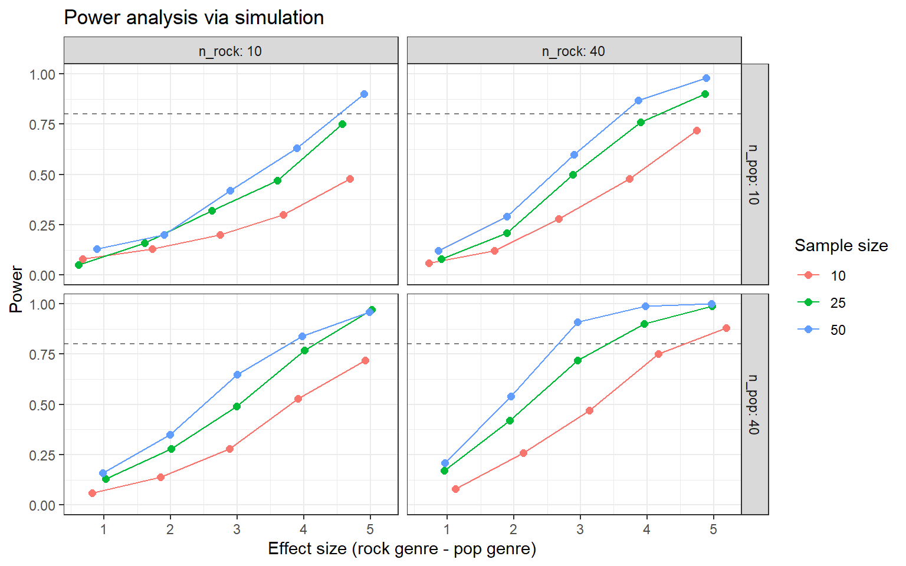
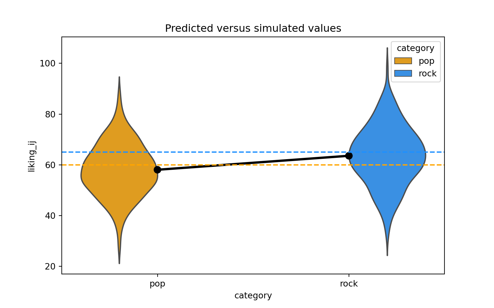
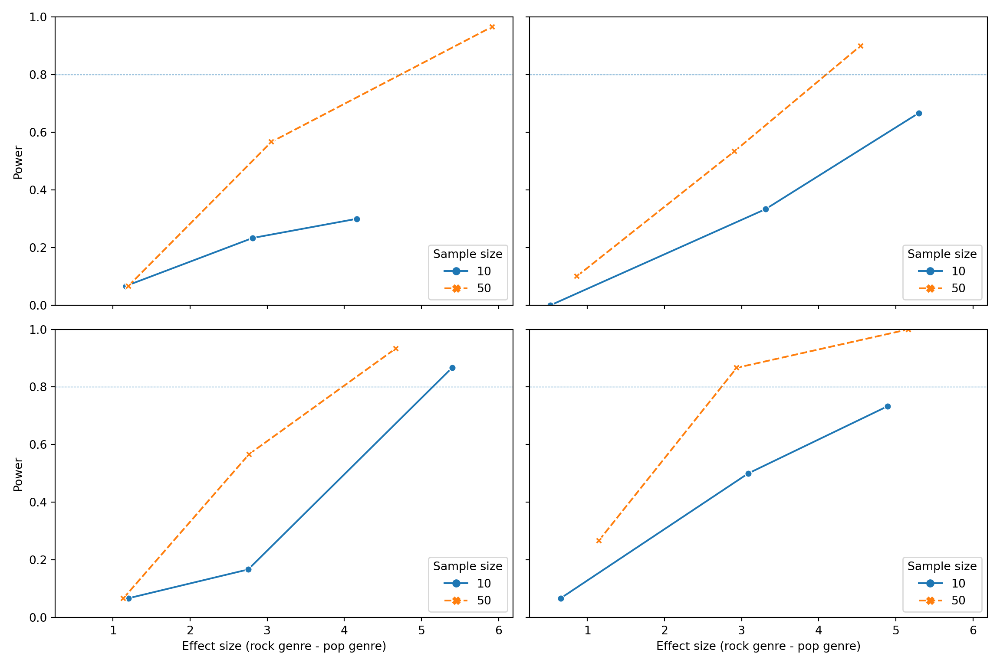

Simulation-Based Power Analysis
This tutorial is designed to be a quick-start guide for conducting simulation-based power analyses in R, Python, and Stata. We focus particularly on power for mixed effects models, but the principles employed can be repurposed for any model and study design. The tutorial is suitable for anyone with a intermediate understanding of mixed effects models and coding in either R, Python, or Stata.
While high-level packages exist in some of these languages for conducting simulation-based power analysis (e.g., the R packages {simr}, {longpower}, and {simglm}), such packages abstract away the details of conducting simulations and thus are best used after gaining an understanding of the power simulation process. In addition, rolling your own simulations from scratch provides much more flexibility to tackle different study designs and models - and it’s fun!
We are always grateful for any feedback you are willing to provide about our tutorials! Please email help@iq.harvard.edu with any thoughts.
Table of Contents
- Canned Power Analysis
- Simulation-based Power Analysis
- Power of What?
- R Examples
- Python Examples
- Stata Examples
- Software Comparison
- Resources

Contributors
The contents of these workshops are the result of a collaborative effort from members of the Data Science Services team at the Institute for Quantitative Social Science at Harvard University. The main contributors are Steve Worthington and Dan Yuan, with additional feedback from Jinjie Liu and Noah Greifer.
1 Power Analysis
Statistical power is the probability of rejecting a null hypothesis when it is false, or equivalently, of detecting an effect if such an effect exists.
1.1 Canned routines
For some studies, it can be an important step to calculate a priori statistical power. We use statistical power to determine the probability of rejecting a null hypothesis when it is false, or equivalently, of detecting an effect if such an effect exists.
\[ \begin{align} \textrm{Power} &= \textrm{Pr}(\textrm{reject} \, H_0 \, | \, H_0 \, \textrm{is false}) \\ &= 1 - \textrm{Pr}(\textrm{fail to reject} \, H_0 \, | \, H_0 \, \textrm{is false}) \\ &= 1 - \beta \end{align} \]
We want \(\beta\) (Type II error) to be small and power to be large. When designing a study, rather than calculating power when sample size and effect size are fixed, researchers typically want to know the sample size required to reject a null hypothesis at a given level of power and effect size.
In some situations, where the study design and/or model of interest is fairly simple, we can use a formula to calculate the sample size required to reject a null hypothesis. We will use a simple example to show the process involved. For instance, if we plan to perform a test of an hypothesis comparing the cholesterol levels of people in two populations, one with a diet comprising low oat consumption and the other with high oat consumption, we could specify the following null and alternative hypotheses, respectively:
\[ \begin{align} \textrm{H}_0 : \mu_1 - \mu_2 &= 0 \\ \textrm{H}_1 : \mu_1 - \mu_2 &\neq 0 \end{align} \]
where \(\mu_1\) and \(\mu_2\) are the mean cholesterol levels in the two populations being compared. We can use a formula to determine the sample sizes required so that the test has a specific power. We will need the following inputs to the formula:
- \(\alpha\) (Type I error / significance level): typically, this is set to \(0.05\) in most studies.
- \(1 - \beta\) (power): often this is set to \(0.8\) or \(0.9\).
- \(\sigma\) (population standard deviation): we need to estimate/guess this.
- \(\delta\) (alternative hypothesis): ideally the smallest difference \(\delta = \mu_1 - \mu_2\) that has scientific or clinical importance.
Given \(\alpha\), \((1 - \beta)\), \(\sigma\), and \(\delta\), we can calculate \(n_g\) the sample size in each group to reject \(\textrm{H}_0\) with probability \((1 - \beta)\). To simplify things a little, we will use the normal distribution as an approximation to the \(t\) distribution (which should be fine when \(n_g \geq 30\)). Here is the formula for this approximate two-sample \(t\)-test:
\[ n_g \approx 2(z_{\alpha / 2} + z_\beta)^2 \left( \frac{\sigma}{\delta} \right)^2 \]
where \(n_g\) is the sample size required in each group, \(z_{\alpha/2}\) is the value from the standard normal distribution holding half the selected \(\alpha\) level below it (because this is a two-tailed test), \(z_\beta\) is the value from the standard normal distribution holding the \(\beta\) level below it, \(\delta\) is the effect size (the difference in population averages \(\mu_1 - \mu_2\) of cholesterol), and \(\sigma\) is the pooled population standard deviation (during study planning we usually assume equal variances in the two groups). Typically, we would set \(\alpha\) and \(\beta\) to the following values and rely on previous studies or pilot data to obtain reasonable values for \(\sigma\) and \(\delta\):
- \(\alpha = 0.05\), so \(z_{\alpha / 2} = 1.960\).
- \(1 - \beta = 0.8\), so \(\beta = 0.2\), so \(z_\beta = 0.8416\).
- \(\sigma = 1\); this could be our best guess based on previous studies.
- \(\delta = 0.7\), our best guess based on previous studies could be that mean differences of 0.7 mmol/L or greater should be considered biologically important.
We can then plug these input values into our formula:
\[ n_g \approx 2(1.960 + 0.8416)^2 \left( \frac{1}{0.7} \right)^2 = 32.036 \]
We always round up to a whole number for sample size, so for this study we need 33 subjects per group, or \(n=66\) in total.
In practice, we will often rely on software to perform the above calculation for us. In R we can use the power.t.test() function from the built-in {stats} package to calculate the sample size needed to reject the null hypothesis that \(\textrm{H}_0 : \mu_1 - \mu_2 = 0\). We just need to pass the \(n\) parameter as NULL to tell R that we’d like to calculate sample size based on the values of the other parameters:
##
## Two-sample t test power calculation
##
## n = 33.02467
## delta = 0.7
## sd = 1
## sig.level = 0.05
## power = 0.8
## alternative = two.sided
##
## NOTE: n is number in *each* group1.2 Step by step
Here are the general set of steps required to implement a power analysis for most study designs:
1. Specify a hypothesis test.
Make explicit a null and alternative hypothesis.
2. Specify Type I and Type II error levels for the test.
Typically, the Type I error level (significance level / false positive level) is set to \(\alpha=0.05\) and Type II error level (false negative level) \(\beta=0.2\), which yields a power level of \(1 - \beta = 0.8\), but other values could be substituted instead.
3. Specify the estimated effect size level for the test.
To solve for sample size \(n\), we need an estimate of effect size (\(\delta = \mu_1 - \mu_2\)) that has scientific meaning. Sometimes we need to use a pilot dataset or look to previous studies to get this value.
4. Calculate the sample size required to obtain the power level desired.
This can either be done by pugging and chugging values into the relevant formula, or by using a software-based implementation of said formula.
2 Simulation
2.1 Customization
Formulas often do not exist to calculate power for the effect of interest and therefore canned functions/programs/macros may not be available. For some studies, such as those involving complex study designs or those using mixed effects models for inference, we must therefore rely on simulation to provide a means of generating estimates of power that are customized for our current situation.
The basic idea is to simulate running our study many times and calculate the proportion of times we reject the null hypothesis. This proportion provides an estimate of power. Generating a dataset and running an analysis for the hypothesis test is part of the simulation. Randomness is introduced into the process during dataset generation.
For example, say the desired power level is 90%, and you want to calculate the sample size required to obtain this level of power. We could use the “guess sample size and check power” method. Firstly, choose a sample size \(n_1\) and run the simulation to estimate power. If power is estimated to be lower than 90%, select a new value \(n_2\) that is larger than \(n_1\) and run the simulation again. Simulation runs are repeated until the estimated power is roughly 90%.
2.2 Step by step
There are two broad steps involved in conducting simulation-based power analysis: 1) thinking and, 2) implementing.
- Think
- Model specification: Write down the regression model, including all variables and parameters of interest.
- Variable composition: Specify the form of the explanatory variables, such as the range of age or BMI, proportion of females/males, or the coding scheme used for categorical terms.
- Parameter composition: Establish reasonable values for the data-generating parameters in your model.
- Implement
- Simulate: Simulate the sampling process for a single dataset, assuming the alternative hypothesis, and fit the model of interest.
- Automate: Write a function/program/macro to automate the process of creating datasets, fitting models, testing the hypothesis of interest, and calculating power for that test - the number of significant simulations out of the total number of simulations. The function/program/macro should be flexible enough to allow for iterating power calculations over a grid of different parameter values.
- Summarize: Summarize the relationships between power, sample size, and effect size in tables and figures.
The implementation phase can be summarized by the following graphic:

3 Power of What?
The initial steps of power simulation involve nothing more than thinking and writing down your thoughts using a pencil and paper. But, prior to walking through these steps, there is an even more fundamental issue to be addressed - the power of what?
What quantity within our model do we wish to calculate power for? Overall model goodness-of-fit, individual parameters, or combinations of parameters? The point of entry for power analysis is always to identify the particular effect of interest, and for that we must answer the question: “power of what?”
3.1 Study design
The study design we will use as an example throughout this tutorial comes from Julian Quandt’s blogpost (https://julianquandt.com/post/power-analysis-by-data-simulation-in-r-part-iv/). He describes this as:
A new hypothetical research question focused on music preference. The overarching research goal will be to find out whether Rock or Pop music is better. Of course, we could just ask people what they prefer, but we want a more objective measure of what is Rock and Pop (people might have different ideas about the genres). Therefore, we will have participants listen to a bunch of different songs that are either from a Spotify “best-of-pop” or “best-of-rock” playlist and have them rate each song on an evaluation scale from 0-100 points.
3.2 Mixed effects model
Canned routines exist to perform power analysis for some simple general linear models (GLMs), however, for generalized linear mixed effects models (GLMMs) we must rely on simulation. We will walk through the process of simulating data for a GLMM in a step-by-step manner, which will serve as scaffolding to build intuition about how to conduct power simulation. Once we have the workflow down, we can automate the simulation process using functions.
While the outcome in this example is bounded on the interval [0, 100], we will not concern ourselves with the issue of using a linear model with such an outcome.
3.2.1 Step 1: model specification
The first step in simulation-based power analysis is to write down the regression model of interest, including all variables and parameters:
\[ \textrm{liking}_{ij} = \beta_0 + T_{0j} + O_{0i} + (\beta_1 + T_{1j}) \times \textrm{genre}_i + \epsilon_{ij} \]
where the subscripts \(i\) and \(j\) denote individual songs and participants, respectively, liking is an integer-based rating of a given song on the interval [0, 100], genre is a dummy coded binary variable indicating whether the song is classified as “rock” or “pop”, and we assume \(T_{0j} \sim \mathcal{N}(0, \tau_0)\), \(T_{1j} \sim \mathcal{N}(0, \tau_1)\), \(O_{0i} \sim \mathcal{N}(0, \omega_0)\), and \(\epsilon_{ij} \sim \mathcal{N}(0, \sigma)\). The parameter of interest is \(\beta_1\) - the average (within-subject) difference in the rating of songs between the two genres. Table 3.1 lists all of the variables and parameters in the model.
| model | code | description |
|---|---|---|
| \(\textrm{liking}_{ij}\) | \(\texttt{liking_ij}\) | rating of song \(i\) for participant \(j\) on the interval [0, 100] |
| \(\textrm{genre}_i\) | \(\texttt{genre_i}\) | genre of song \(i\) (0=‘pop’, 1=‘rock’) |
| \(\beta_0\) | \(\texttt{beta_0}\) | intercept; mean of liking rating for ‘pop’ genre |
| \(\beta_1\) | \(\texttt{beta_1}\) | slope; mean difference btw ‘pop’ and ‘rock’ song ratings |
| \(\tau_0\) | \(\texttt{tau_0}\) | standard deviation of by-subject random intercepts |
| \(\tau_1\) | \(\texttt{tau_1}\) | standard deviation of by-subject random slopes |
| \(\rho\) | \(\texttt{rho}\) | correlation between by-subject random intercepts and slopes |
| \(\omega_0\) | \(\texttt{omega_0}\) | standard deviation of by-song random intercepts |
| \(\sigma\) | \(\texttt{sigma}\) | standard deviation of residuals |
| \(T_{0j}\) | \(\texttt{T_0j}\) | random intercept for subject \(j\) |
| \(T_{1j}\) | \(\texttt{T_1j}\) | random slope for subject \(j\) |
| \(O_{0i}\) | \(\texttt{O_0i}\) | random intercept for song \(i\) |
| \(e_{ij}\) | \(\texttt{e_ij}\) | residual of song \(i\) for participant \(j\) |
3.2.2 Step 2: Variable composition
Once we have the model equation, we need to specify the details of the explanatory variables. In our model, we only have a single binary predictor, so the only decision to make is which coding scheme to use: dummy coding, zero sum coding, or something else. Here, we chose dummy coding, since our primary interest is in the difference between the “rock” and “pop” genres.
In many other situations, we might include variables such as age and sex in the model. In which case we would need to determine reasonable settings for the range of age and the proportion of females to males. For example, the range of age might encompass the full possible range of human longevity (e.g., 0 to 120 years) or could be more focused on non-retired adults (e.g., 18 to 65 years). The proportion of females to males could theoretically vary anywhere in the interval (0, 1), but practically is rarely outside of the interval [0.45, 0.55].
3.2.3 Step 3: Parameter composition
Finally, we need to establish the data-generating parameters in the model. You may draw on your own, or your colleague’s, substantive expertise about the phenomenom you’re studying to determine what paramater values are plausible. Or, you might look to the literature for studies that examined similar effects. Table 3.2 lists parameter values we will use as a starting point. Later, we will try using some alternative values and compare power for each.
| code | value | description |
|---|---|---|
| \(\texttt{beta_0}\) | 60 | intercept; i.e., mean of liking rating for ‘pop’ genre |
| \(\texttt{beta_1}\) | 5 | slope; i.e, mean difference btw ‘pop’ and ‘rock’ song ratings |
| \(\texttt{tau_0}\) | 7 | by-subject random intercept sd |
| \(\texttt{tau_1}\) | 4 | by-subject random slope sd |
| \(\texttt{rho}\) | 0.2 | correlation between intercept and slope |
| \(\texttt{omega_0}\) | 3 | by-song random intercept sd |
| \(\texttt{sigma}\) | 8 | residual (error) sd |
4 R
4.1 Setup
We will need to use several R packages to optimize our workflow and fit
mixed effects models. We can use the p_load() function from the
{pacman} library to automate installing these packages onto our
machine and then load them into our search path.
# uncomment the line below to install the {pacman} library on your computer
# install.packages("pacman")
pacman::p_load(
lme4, # model specification / estimation
lmerTest, # provides p-values in the model output
future, # parallelization
future.apply, # fast automation
furrr, # fast functional programming
faux, # simulate from multivariate normal distribution
broom.mixed, # extracting tidy data from model fits
tidyverse, # data wrangling and visualisation
gt # nice tables
)
faux_options(verbose = FALSE)We will also set the pseudo-random number generator seed to 02138 to
make the stochastic components of our simulations reproducible.
Finally, let’s take advantage of background parallelization to speed-up iterative processes.
4.2 Data simulation step by step
To give an overview of the power simulation task, we will simulate data from a design with crossed random factors of subjects and songs (see Power of What? for design details), fit a model to the simulated data, recover from the model output the parameter values we put in, calculate power, and finally automate the whole process so that we can calculate power for different effect sizes. Much of the general workflow here is borrowed from DeBruine & Dale (2021) Understanding Mixed-Effects Models through Simulation. We’ll start by writing code that simulates datasets under the alternative hypothesis.
4.2.1 Establish the simulation parameters
Before we start, let’s set some global parameters for our power simulations. Since simulations can take a long time to run, we’ll use 100 replications here as an example, but we recommend increasing this number to at least 1000 replications for a more accurate final power calculation.
4.2.2 Establish the data-generating parameters
The first thing to do is to set up the parameters that govern the process we assume gave rise to the data - the data-generating process, or DGP. We previously decided upon the the data-generating parameters (see Power of What?), so we just need to code them here.
# set all data-generating parameters
beta_0 <- 60 # intercept; i.e., the grand mean
beta_1 <- 5 # slope; i.e, effect of category
omega_0 <- 3 # by-song random intercept sd
tau_0 <- 7 # by-subject random intercept sd
tau_1 <- 4 # by-subject random slope sd
rho <- 0.2 # correlation between intercept and slope
sigma <- 8 # residual (error) sd4.2.3 Simulate the sampling process
Next, we will simulate the sampling process for the data. First, let’s define parameters related to the number of observations.
# set number of subjects and songs
n_subj <- 25 # number of subjects
n_pop <- 15 # number of songs in pop category
n_rock <- 15 # number of songs in rock category4.2.3.1 Simulate the sampling of songs
We need to create a table listing each song \(i\), which category it is in
(rock or pop), and its random effect \(O_{0i}\). The latter is sampled
from a univariate normal distribution using the function rnorm().
# simulate a sample of songs
songs <- tibble(
song_id = seq_len(n_pop + n_rock),
category = rep(c("pop", "rock"), c(n_pop, n_rock)),
genre_i = rep(c(0, 1), c(n_pop, n_rock)),
O_0i = rnorm(n = n_pop + n_rock, mean = 0, sd = omega_0)
)
print(songs, n=10)## # A tibble: 30 × 4
## song_id category genre_i O_0i
## <int> <chr> <dbl> <dbl>
## 1 1 pop 0 0.0930
## 2 2 pop 0 -0.960
## 3 3 pop 0 -2.40
## 4 4 pop 0 -5.11
## 5 5 pop 0 3.64
## 6 6 pop 0 1.37
## 7 7 pop 0 -8.10
## 8 8 pop 0 -0.382
## 9 9 pop 0 -3.41
## 10 10 pop 0 5.14
## # ℹ 20 more rows4.2.3.2 Simulate the sampling of subjects
Now we simulate the sampling of participants, which results in table listing each individual and their two correlated random effects (a random intercept and random slope). To do this, we must sample \({T_{0j}, T_{1j}}\) pairs - one for each subject - from a bivariate normal distribution.
We will use the function faux::rnorm_multi(), which generates a table
of n simulated values from a multivariate normal distribution by
specifying the means (mu) and standard deviations (sd) of each
variable, plus the correlations (r), which can be either a single
value (applied to all pairs), a correlation matrix, or a vector of the
values in the upper right triangle of the correlation matrix.
# simulate a sample of subjects
# sample from a multivariate normal distribution
subjects <- faux::rnorm_multi(
n = n_subj,
mu = 0, # means for random effects are always 0
sd = c(tau_0, tau_1), # set SDs
r = rho, # set correlation
varnames = c("T_0j", "T_1j")
) |>
mutate(subj_id = seq_len(n_subj)) |> # add subject IDs
as_tibble()
print(subjects, n=10)## # A tibble: 25 × 3
## T_0j T_1j subj_id
## <dbl> <dbl> <int>
## 1 -2.33 0.169 1
## 2 0.396 1.96 2
## 3 -8.48 0.716 3
## 4 -13.8 -5.05 4
## 5 -3.51 -1.16 5
## 6 -2.12 -4.99 6
## 7 9.44 7.00 7
## 8 3.96 3.05 8
## 9 -11.5 -3.29 9
## 10 4.76 -5.68 10
## # ℹ 15 more rows4.2.3.3 Check the simulated values
Let’s do a quick sanity check by comparing our simulated values to the parameters we used as inputs. Because the sampling process is stochastic, we shouldn’t expect that these will exactly match for any given run of the simulation.
tibble(
parameter = c("omega_0", "tau_0", "tau_1", "rho"),
value = c(omega_0, tau_0, tau_1, rho),
simulated = c(
sd(songs$O_0i),
sd(subjects$T_0j),
sd(subjects$T_1j),
cor(subjects$T_0j, subjects$T_1j)
)
)## # A tibble: 4 × 3
## parameter value simulated
## <chr> <dbl> <dbl>
## 1 omega_0 3 3.00
## 2 tau_0 7 7.87
## 3 tau_1 4 4.05
## 4 rho 0.2 0.4954.2.3.4 Simulate trials
Since all subjects rate all songs (i.e., the design is fully crossed) we
can set up a table of trials by including every possible combination of
the rows in the subjects and songs tables. Each trial has random
error associated with it, reflecting fluctuations in trial-by-trial
ratings due to unknown factors. We simulate this by sampling values from
a univariate normal distribution with a mean of 0 and a standard
deviation of sigma.
# cross subject and song IDs; add an error term
trials <- crossing(subjects, songs) |>
mutate(e_ij = rnorm(n(), mean = 0, sd = sigma))
print(trials, n=10)## # A tibble: 750 × 8
## T_0j T_1j subj_id song_id category genre_i O_0i e_ij
## <dbl> <dbl> <int> <int> <chr> <dbl> <dbl> <dbl>
## 1 -14.2 -0.797 11 1 pop 0 0.0930 -2.07
## 2 -14.2 -0.797 11 2 pop 0 -0.960 5.46
## 3 -14.2 -0.797 11 3 pop 0 -2.40 5.79
## 4 -14.2 -0.797 11 4 pop 0 -5.11 -2.02
## 5 -14.2 -0.797 11 5 pop 0 3.64 16.5
## 6 -14.2 -0.797 11 6 pop 0 1.37 3.92
## 7 -14.2 -0.797 11 7 pop 0 -8.10 11.9
## 8 -14.2 -0.797 11 8 pop 0 -0.382 -6.91
## 9 -14.2 -0.797 11 9 pop 0 -3.41 -6.68
## 10 -14.2 -0.797 11 10 pop 0 5.14 -2.11
## # ℹ 740 more rows4.2.3.5 Calculate response values
With this resulting trials table, in combination with the constants
beta_0 and beta_1, we have the full set of values that we need to
compute the response variable liking_ij according the linear model we
defined previously (see Power of What?).
dat_sim <- trials |>
mutate(liking_ij = beta_0 + T_0j + O_0i + (beta_1 + T_1j) * genre_i + e_ij) %>%
select(subj_id, song_id, category, genre_i, liking_ij)
print(dat_sim, n=10)## # A tibble: 750 × 5
## subj_id song_id category genre_i liking_ij
## <int> <int> <chr> <dbl> <dbl>
## 1 11 1 pop 0 43.8
## 2 11 2 pop 0 50.3
## 3 11 3 pop 0 49.2
## 4 11 4 pop 0 38.7
## 5 11 5 pop 0 66.0
## 6 11 6 pop 0 51.1
## 7 11 7 pop 0 49.7
## 8 11 8 pop 0 38.5
## 9 11 9 pop 0 35.7
## 10 11 10 pop 0 48.8
## # ℹ 740 more rows4.2.3.6 Plot the data
Let’s visualize the distribution of the response variable for each of the two song genres and superimpose the simulated parameter estimates for the means of these two groups.
dat_sim |>
ggplot(aes(category, liking_ij, color = category)) +
# predicted means
geom_hline(yintercept = (beta_0 + 0*beta_1),
color = "orange", linetype = "dashed", linewidth = 1) +
geom_hline(yintercept = (beta_0 + 1*beta_1),
color = "dodgerblue", linetype = "dashed", linewidth = 1) +
# actual data
geom_violin(alpha = 0.5, show.legend = FALSE, fill = "grey65") +
stat_summary(fun = mean, geom="crossbar", show.legend = FALSE) +
scale_color_manual(values = c("orange", "dodgerblue")) +
ggtitle("Predicted versus simulated values") +
theme_bw()
4.2.4 Analyze the simulated data
Now we can analyze our simulated data in a linear mixed effects model
using the function lmer() from the {lmerTest} package (which is a
wrapper around the lmer() function from the {lme4} package that
additionally provides \(p\)-values). The model formula in lmer() maps
onto how we calculated our liking_ij outcome variable above.
The terms in this R formula are as follows:
liking_ijis the response.1is the intercept (beta_0), which is the mean of the response for the pop genre of songs (because we used dummy coding for thegenre_iterm).genre_iis the dummy coded variable identifying whether song \(i\) belongs to the pop or rock genre.(1 | song_id)specifies a song-specific random intercept (O_0i).(1 + genre_i | subj_id)specifies a subject-specific random intercept (T_0j) plus the subject specific random slope of the genre category (T_1j).
Now we can estimate the model.
# fit a linear mixed-effects model to data
mod_sim <- lmer(form, data = dat_sim)
summary(mod_sim, corr = FALSE)## Linear mixed model fit by REML. t-tests use Satterthwaite's method [
## lmerModLmerTest]
## Formula: form
## Data: dat_sim
##
## REML criterion at convergence: 5392.5
##
## Scaled residuals:
## Min 1Q Median 3Q Max
## -3.00888 -0.66610 0.02982 0.64259 2.95212
##
## Random effects:
## Groups Name Variance Std.Dev. Corr
## song_id (Intercept) 12.60 3.550
## subj_id (Intercept) 57.18 7.562
## genre_i 22.98 4.793 0.45
## Residual 62.81 7.926
## Number of obs: 750, groups: song_id, 30; subj_id, 25
##
## Fixed effects:
## Estimate Std. Error df t value Pr(>|t|)
## (Intercept) 58.474 1.815 37.775 32.216 < 2e-16 ***
## genre_i 7.501 1.713 40.857 4.379 8.09e-05 ***
## ---
## Signif. codes: 0 '***' 0.001 '**' 0.01 '*' 0.05 '.' 0.1 ' ' 1We can use the broom.mixed::tidy() function to get a tidy table of the
results. This will prove to be super useful later when we need to
combine the output from hundreds of simulations to calculate power. We
will added columns for parameter and value, so we can compare the
estimate from the model to the parameters we used to simulate the data.
# get a tidy table of results
broom.mixed::tidy(mod_sim) |>
mutate(across(is.numeric, round, 3)) |>
mutate(
parameter = c("beta_0", "beta_1", "omega_0", "tau_0", "rho", "tau_1", "sigma"),
value = c(beta_0, beta_1, omega_0, tau_0, rho, tau_1, sigma),
) |>
select(term, parameter, value, estimate) |>
knitr::kable()| term | parameter | value | estimate |
|---|---|---|---|
| (Intercept) | beta_0 | 60.0 | 58.474 |
| genre_i | beta_1 | 5.0 | 7.501 |
| sd__(Intercept) | omega_0 | 3.0 | 3.550 |
| sd__(Intercept) | tau_0 | 7.0 | 7.562 |
| cor__(Intercept).genre_i | rho | 0.2 | 0.451 |
| sd__genre_i | tau_1 | 4.0 | 4.793 |
| sd__Observation | sigma | 8.0 | 7.926 |
4.3 Data simulation automated
Now that we’ve tested the data generating code, we can put it into a function so that it’s easy to run it repeatedly.
# set up the custom data simulation function
sim_data <- function(
n_subj = 25, # number of subjects
n_pop = 15, # number of pop songs
n_rock = 15, # number of rock songs
beta_0 = 60, # mean for pop genre
beta_1 = 5, # effect of genre
omega_0 = 3, # by-song random intercept sd
tau_0 = 7, # by-subject random intercept sd
tau_1 = 4, # by-subject random slope sd
rho = 0.2, # correlation between intercept and slope
sigma = 8 # residual (standard deviation)
)
{
# simulate a sample of songs
songs <- tibble(
song_id = seq_len(n_pop + n_rock),
category = rep(c("pop", "rock"), c(n_pop, n_rock)),
genre_i = rep(c(0, 1), c(n_pop, n_rock)),
O_0i = rnorm(n = n_pop + n_rock, mean = 0, sd = omega_0)
)
# simulate a sample of subjects
subjects <- faux::rnorm_multi(
n = n_subj,
mu = 0,
sd = c(tau_0, tau_1),
r = rho,
varnames = c("T_0j", "T_1j")
) |>
mutate(subj_id = seq_len(n_subj))
# cross subject and song IDs
crossing(subjects, songs) |>
mutate(e_ij = rnorm(n(), mean = 0, sd = sigma),
liking_ij = beta_0 + T_0j + O_0i + (beta_1 + T_1j) * genre_i + e_ij) |>
select(subj_id, song_id, category, genre_i, liking_ij)
}4.4 Power calculation single run
We can wrap the data generating function and modeling code in a new
function single_run() that returns a tidy table of the analysis
results for a single simulation run. We’ll suppress warnings and
messages from the modeling fitting process, as these sometimes occur
with simulation runs that generate extreme realized values for
parameters.
# set up the power function
single_run <- function(...) {
# ... is a shortcut that forwards any additional arguments to sim_data()
dat_sim <- sim_data(...)
mod_sim <- suppressWarnings({ suppressMessages({ # suppress singularity messages
lmerTest::lmer(liking_ij ~ 1 + genre_i + (1 | song_id) + (1 + genre_i | subj_id), data = dat_sim)
})})
broom.mixed::tidy(mod_sim)
}Let’s test that our new single_run() function performs as expected.
## # A tibble: 7 × 8
## effect group term estimate std.error statistic df p.value
## <chr> <chr> <chr> <dbl> <dbl> <dbl> <dbl> <dbl>
## 1 fixed <NA> (Intercept) 60.9 1.89 32.2 34.6 2.26e-27
## 2 fixed <NA> genre_i 4.23 1.58 2.68 39.9 1.08e- 2
## 3 ran_pars song_id sd__(Intercept) 3.27 NA NA NA NA
## 4 ran_pars subj_id sd__(Intercept) 8.24 NA NA NA NA
## 5 ran_pars subj_id cor__(Intercep… 0.678 NA NA NA NA
## 6 ran_pars subj_id sd__genre_i 4.37 NA NA NA NA
## 7 ran_pars Residual sd__Observation 7.73 NA NA NA NA## # A tibble: 7 × 8
## effect group term estimate std.error statistic df p.value
## <chr> <chr> <chr> <dbl> <dbl> <dbl> <dbl> <dbl>
## 1 fixed <NA> (Intercept) 57.0 1.97 29.0 44.9 1.05e-30
## 2 fixed <NA> genre_i 1.54 1.76 0.873 57.3 3.86e- 1
## 3 ran_pars song_id sd__(Intercept) 3.46 NA NA NA NA
## 4 ran_pars subj_id sd__(Intercept) 7.77 NA NA NA NA
## 5 ran_pars subj_id cor__(Intercep… 0.210 NA NA NA NA
## 6 ran_pars subj_id sd__genre_i 5.85 NA NA NA NA
## 7 ran_pars Residual sd__Observation 7.92 NA NA NA NA4.5 Power calculation automated
To get an accurate estimation of power, we need to run the simulation
many times. Here we use the future_map_dfr() function to iterate over
a sequence of integers denoting the replications we want to perform.
We can finally calculate power for our parameter of interest
beta_1(denoted in the tidy model output table as the term genre_i)
by filtering to keep only that term and the calculating the proportion
of times the \(p\)-value is below the alpha (0.05) threshold.
# calculate mean estimates and power for specified alpha
sims |>
filter(term == "genre_i") |>
group_by(term) |>
summarise(
mean_estimate = mean(estimate),
mean_se = mean(std.error),
power = mean(p.value < alpha),
.groups = "drop"
)## # A tibble: 1 × 4
## term mean_estimate mean_se power
## <chr> <dbl> <dbl> <dbl>
## 1 genre_i 4.97 1.47 0.884.5.1 Check false positive rate
We can do a sanity check to see if our simulation is performing as
expected by checking the false positive rate (Type I error rate). We set
the effect of genre_ij (beta_1) to 0 to calculate the false positive
rate, which is the probability of concluding there is an effect when
there is no actual effect in the population.
# run simulations and calculate the false positive rate
sims_fp <- future_map_dfr(1:reps, ~ single_run(beta_1 = 0))
# calculate mean estimates and power for specified alpha
sims_fp |>
filter(term == "genre_i") |>
summarise(power = mean(p.value < alpha))## # A tibble: 1 × 1
## power
## <dbl>
## 1 0.05Ideally, the false positive rate will be equal to alpha, which we set
at 0.05.
4.6 Power for different effect sizes
In real life, we will not know the effect size of our quantity of interest and so we will need to repeatedly perform the power analysis over a range of different plausible effect sizes. Perhaps we might also want to calculate power as we vary other data-generating parameters, such as the number of pop and rock songs sampled and the number of subjects sampled. We can create a table that combines all combinations of the parameters we want to vary in a grid.
# grid of parameter values of interest
pgrid <- crossing(
n_subj = c(10, 25, 50),
n_pop = c(10, 40),
n_rock = c(10, 40),
beta_1 = 1:5
)We can now wrap our single_run() function within a more general
function parameter_search() that takes the grid of parameter values as
input and uses the future_pmap_dfr() function to iterate over each row
of parameter values in pgrid and feed them into single_run().
# fit the models over the parameters
parameter_search <- function(params = pgrid){
future_pmap_dfr(
.l = params, # iterate over the grid of parameter values
.f = ~ single_run(
n_subj = ..1, # plug each row of parameter values into single_run()
n_pop = ..2,
n_rock = ..3,
beta_1 = ..4
),
.options = furrr_options(seed = TRUE),
.progress = TRUE
)
}If we call parameter_search() it will return a single replication of
simulations for each combination of parameter values in pgrid.
## # A tibble: 420 × 8
## effect group term estimate std.error statistic df p.value
## <chr> <chr> <chr> <dbl> <dbl> <dbl> <dbl> <dbl>
## 1 fixed <NA> (Intercept) 58.3 2.97 19.7 10.4 1.42e- 9
## 2 fixed <NA> genre_i -0.383 1.98 -0.194 12.9 8.49e- 1
## 3 ran_pars song_id sd__(Intercep… 2.62 NA NA NA NA
## 4 ran_pars subj_id sd__(Intercep… 8.58 NA NA NA NA
## 5 ran_pars subj_id cor__(Interce… -0.708 NA NA NA NA
## 6 ran_pars subj_id sd__genre_i 3.24 NA NA NA NA
## 7 ran_pars Residual sd__Observati… 8.62 NA NA NA NA
## 8 fixed <NA> (Intercept) 62.8 2.15 29.1 14.6 2.36e-14
## 9 fixed <NA> genre_i 1.75 2.13 0.820 16.8 4.24e- 1
## 10 ran_pars song_id sd__(Intercep… 3.52 NA NA NA NA
## # ℹ 410 more rowsTo run multiple replications of parameter_search(), we can use the
future_replicate() function, which just repeatedly calls
parameter_search() for the number of times specified by reps. Fair
warning, this will take some time if you have set a high number of
replications!
# replicate the parameter grid to match the dimensions of the model outputs
pgrid_expand <- pgrid |>
slice(rep(1:n(), each = 7)) |> # replicate each row by 7 parameters
map_df(rep.int, times = reps) # replicate the whole grid by number of reps
# replicate the parameter search many times
sims_params <- future_replicate(
n = reps,
expr = parameter_search(),
simplify = FALSE
) |>
imap( ~ mutate(.x, rep = .y, .before = "effect")) |> # include rep ID
bind_rows() |> # combine into a single tibble
mutate(pgrid_expand, .before = "effect") # add in the parameter grid valuesNow, as before, we can calculate power. But this time we’ll group by all
of the parameters we manipulated in pgrid, so that we can get power
estimates for all combinations of parameter values.
sims_table <- sims_params |>
filter(term == "genre_i") |>
group_by(term, n_subj, n_pop, n_rock, beta_1) |>
summarise(
mean_estimate = mean(estimate),
mean_se = mean(std.error),
power = mean(p.value < alpha),
.groups = "drop"
)Here’s a graph that visualizes the output of the power simulation.
sims_table |>
mutate(across(n_subj:beta_1, as.factor),
n_pop = paste0("n_pop: ", n_pop),
n_rock = paste0("n_rock: ", n_rock)) |>
ggplot(aes(x = mean_estimate, y = power,
group = n_subj, color = n_subj)) +
geom_hline(yintercept = 0.8, linetype = "dashed",
color = "grey50", linewidth = 0.5) +
geom_line() +
geom_point(size = 2) +
facet_grid(n_pop ~ n_rock) +
ylim(0, 1) +
labs(x = "Effect size (rock genre - pop genre)",
y = "Power",
title = "Power analysis via simulation",
color = "Sample size") +
theme_bw()
Here’s a nicely formatted table that summarizes the output from the power simulation.
sims_table |>
gt() |>
tab_header(title = "Power analysis via simulation") |>
data_color(
columns = power,
fn = scales::col_numeric(
palette = c("red", "green"),
domain = c(0, 1)
)
)| Power analysis via simulation | |||||||
| term | n_subj | n_pop | n_rock | beta_1 | mean_estimate | mean_se | power |
|---|---|---|---|---|---|---|---|
| genre_i | 10 | 10 | 10 | 1 | 0.6821340 | 2.1433713 | 0.08 |
| genre_i | 10 | 10 | 10 | 2 | 1.7274589 | 2.1428328 | 0.13 |
| genre_i | 10 | 10 | 10 | 3 | 2.7482126 | 2.1406312 | 0.20 |
| genre_i | 10 | 10 | 10 | 4 | 3.6963509 | 2.1395978 | 0.30 |
| genre_i | 10 | 10 | 10 | 5 | 4.6922276 | 2.1399928 | 0.48 |
| genre_i | 10 | 10 | 40 | 1 | 0.7216763 | 1.8288711 | 0.06 |
| genre_i | 10 | 10 | 40 | 2 | 1.7059291 | 1.8322452 | 0.12 |
| genre_i | 10 | 10 | 40 | 3 | 2.6756674 | 1.8421349 | 0.28 |
| genre_i | 10 | 10 | 40 | 4 | 3.7319609 | 1.8460865 | 0.48 |
| genre_i | 10 | 10 | 40 | 5 | 4.7424011 | 1.8396710 | 0.72 |
| genre_i | 10 | 40 | 10 | 1 | 0.8245941 | 1.8332649 | 0.06 |
| genre_i | 10 | 40 | 10 | 2 | 1.8476570 | 1.8308934 | 0.14 |
| genre_i | 10 | 40 | 10 | 3 | 2.8841097 | 1.8234947 | 0.28 |
| genre_i | 10 | 40 | 10 | 4 | 3.9163802 | 1.8294477 | 0.53 |
| genre_i | 10 | 40 | 10 | 5 | 4.9206879 | 1.8285285 | 0.72 |
| genre_i | 10 | 40 | 40 | 1 | 1.1213453 | 1.4790176 | 0.08 |
| genre_i | 10 | 40 | 40 | 2 | 2.1427686 | 1.4853952 | 0.26 |
| genre_i | 10 | 40 | 40 | 3 | 3.1372541 | 1.4847813 | 0.47 |
| genre_i | 10 | 40 | 40 | 4 | 4.1692116 | 1.4875177 | 0.75 |
| genre_i | 10 | 40 | 40 | 5 | 5.1915115 | 1.4906063 | 0.88 |
| genre_i | 25 | 10 | 10 | 1 | 0.6206088 | 1.7168699 | 0.05 |
| genre_i | 25 | 10 | 10 | 2 | 1.6084364 | 1.7200867 | 0.16 |
| genre_i | 25 | 10 | 10 | 3 | 2.6187355 | 1.7234279 | 0.32 |
| genre_i | 25 | 10 | 10 | 4 | 3.6035387 | 1.7198478 | 0.47 |
| genre_i | 25 | 10 | 10 | 5 | 4.5822773 | 1.7152229 | 0.75 |
| genre_i | 25 | 10 | 40 | 1 | 0.9055907 | 1.4495971 | 0.08 |
| genre_i | 25 | 10 | 40 | 2 | 1.8898537 | 1.4482416 | 0.21 |
| genre_i | 25 | 10 | 40 | 3 | 2.8874405 | 1.4451125 | 0.50 |
| genre_i | 25 | 10 | 40 | 4 | 3.9016062 | 1.4461336 | 0.76 |
| genre_i | 25 | 10 | 40 | 5 | 4.8689765 | 1.4454748 | 0.90 |
| genre_i | 25 | 40 | 10 | 1 | 1.0219424 | 1.4336253 | 0.13 |
| genre_i | 25 | 40 | 10 | 2 | 2.0103972 | 1.4328663 | 0.28 |
| genre_i | 25 | 40 | 10 | 3 | 2.9942518 | 1.4348602 | 0.49 |
| genre_i | 25 | 40 | 10 | 4 | 4.0128924 | 1.4346163 | 0.77 |
| genre_i | 25 | 40 | 10 | 5 | 5.0216769 | 1.4367690 | 0.97 |
| genre_i | 25 | 40 | 40 | 1 | 0.9529641 | 1.0960452 | 0.17 |
| genre_i | 25 | 40 | 40 | 2 | 1.9357289 | 1.0964069 | 0.42 |
| genre_i | 25 | 40 | 40 | 3 | 2.9554635 | 1.0980189 | 0.72 |
| genre_i | 25 | 40 | 40 | 4 | 3.9530592 | 1.0980972 | 0.90 |
| genre_i | 25 | 40 | 40 | 5 | 4.9797585 | 1.0980008 | 0.99 |
| genre_i | 50 | 10 | 10 | 1 | 0.8935373 | 1.5072281 | 0.13 |
| genre_i | 50 | 10 | 10 | 2 | 1.8989927 | 1.5076401 | 0.20 |
| genre_i | 50 | 10 | 10 | 3 | 2.8976098 | 1.5096626 | 0.42 |
| genre_i | 50 | 10 | 10 | 4 | 3.8978394 | 1.5063429 | 0.63 |
| genre_i | 50 | 10 | 10 | 5 | 4.9065649 | 1.5102823 | 0.90 |
| genre_i | 50 | 10 | 40 | 1 | 0.8624299 | 1.2642870 | 0.12 |
| genre_i | 50 | 10 | 40 | 2 | 1.8966771 | 1.2632428 | 0.29 |
| genre_i | 50 | 10 | 40 | 3 | 2.9027209 | 1.2631341 | 0.60 |
| genre_i | 50 | 10 | 40 | 4 | 3.8651279 | 1.2660560 | 0.87 |
| genre_i | 50 | 10 | 40 | 5 | 4.8895942 | 1.2672331 | 0.98 |
| genre_i | 50 | 40 | 10 | 1 | 0.9841072 | 1.2649184 | 0.16 |
| genre_i | 50 | 40 | 10 | 2 | 1.9939159 | 1.2657069 | 0.35 |
| genre_i | 50 | 40 | 10 | 3 | 3.0015429 | 1.2671451 | 0.65 |
| genre_i | 50 | 40 | 10 | 4 | 3.9797475 | 1.2674822 | 0.84 |
| genre_i | 50 | 40 | 10 | 5 | 4.9817978 | 1.2696729 | 0.96 |
| genre_i | 50 | 40 | 40 | 1 | 0.9598020 | 0.9119579 | 0.21 |
| genre_i | 50 | 40 | 40 | 2 | 1.9561492 | 0.9104043 | 0.54 |
| genre_i | 50 | 40 | 40 | 3 | 2.9585712 | 0.9104248 | 0.91 |
| genre_i | 50 | 40 | 40 | 4 | 3.9730888 | 0.9107468 | 0.99 |
| genre_i | 50 | 40 | 40 | 5 | 4.9661969 | 0.9115207 | 1.00 |
5 Python
To begin with, the simulation-based power analysis in Python follows the structure in the last section in R, and there are repetitions in the text to describe the method. However, there are differences between the two languages; we will specify those discrepancies in the following “note” parts.
5.1 Setup
Note: There are two differences between Python and the R language:
- R uses the p_load function to automatically install missing libraries and import libraries. Python needs to manually configure the environment. If the library is missing, you can use “! pip install [package_name]” to install;
- The R has set parallelism in the setup part, but Python uses the dask package to perform parallel computing in the simulation part.
We will need to use several Python packages to optimize our workflow and fit mixed effects models.
import statsmodels.formula.api as smf
import numpy as np
import pandas as pd
import seaborn as sns
import matplotlib
import matplotlib.pyplot as plt
import dask
import time
from dask.distributed import Client
from itertools import product
matplotlib.use("Agg")We will also set the pseudo-random number generator seed to 2138 to make the stochastic components of our simulations reproducible.
5.2 Data simulation step by step
To give an overview of the power simulation task, we will simulate data from a design with crossed random factors of subjects and songs (see Power of What? for design details), fit a model to the simulated data, recover from the model output the parameter values we put in, calculate power, and finally automate the whole process so that we can calculate power for different effect sizes. Much of the general workflow here is borrowed from DeBruine & Dale (2021) Understanding Mixed-Effects Models through Simulation. We’ll start by writing code that simulates datasets under the alternative hypothesis.
Note: There are two differences between Python and the R:
- We use the package of “statsmodels” to set up the mixd effect model in Python. However, this package doesn’t have extension to show the correlation between the random intercept and the random slope of the subject like that in R;
- There’s no “broom.mixed::tidy()” function in Python and that’s why the output is incomplete.
5.2.1 Establish the simulation parameters
Before we start, let’s set some global parameters for our power simulations. Since simulations can take a long time to run, we’ll use 30 replications here as an example, but we recommend increasing this number to at least 1000 replications for a more accurate final power calculation.
5.2.2 Establish the data-generating parameters
The first thing to do is to set up the parameters that govern the process we assume gave rise to the data - the data-generating process, or DGP. We previously decided upon the the data-generating parameters (see Power of What?), so we just need to code them here.
# set all data-generating parameters
beta_0 = 60 # intercept; i.e., the grand mean
beta_1 = 5 # slope; i.e, effect of category
omega_0 = 3 # by-song random intercept sd
tau_0 = 7 # by-subject random intercept sd
tau_1 = 4 # by-subject random slope sd
rho = 0.2 # correlation between intercept and slope
sigma = 8 # residual (error) sd5.2.3 Simulate the sampling process
Next, we will simulate the sampling process for the data. First, let’s define parameters related to the number of observations.
# set number of subjects and songs
n_subj = 25 # number of subjects
n_pop = 15 # number of songs in pop category
n_rock = 15 # number of songs in rock category5.2.3.1 Simulate the sampling of songs
We need to create a table listing each song \(i\), which category it is in (rock or pop), and its random effect \(O_{0i}\). The latter is sampled from a univariate normal distribution using the function np.random.normal().
# simulate a sample of songs
songs = pd.DataFrame({
'song_id': range(1, n_pop + n_rock + 1),
'category': ['pop']*n_pop + ['rock']*n_rock,
'genre_i': [0]*n_pop + [1]*n_rock,
'O_0i': np.random.normal(0, omega_0, n_pop + n_rock)
})
print(songs.head(10))## song_id category genre_i O_0i
## 0 1 pop 0 -1.803722
## 1 2 pop 0 -4.618354
## 2 3 pop 0 -4.847097
## 3 4 pop 0 -1.097951
## 4 5 pop 0 -1.394909
## 5 6 pop 0 2.424235
## 6 7 pop 0 -3.956914
## 7 8 pop 0 0.873891
## 8 9 pop 0 3.318065
## 9 10 pop 0 5.5136715.2.3.2 Simulate the sampling of subjects
Now we simulate the sampling of participants, which results in table listing each individual and their two correlated random effects (a random intercept and random slope). To do this, we must sample \(T_{0j} ,T_{1j}\) pairs - one for each subject - from a bivariate normal distribution.
We will use the function np.random.multivariate_normal(), which generates a table of n simulated values from a multivariate normal distribution by specifying the means and covariance matrix(cov).
# simulate a sample of subjects
# sample from a multivariate normal distribution
mean = [0, 0] # means for random effects are always 0
cov = [[tau_0**2, rho*tau_0*tau_1], [rho*tau_0*tau_1, tau_1**2]] # set covariance matrix
random_effects = np.random.multivariate_normal(mean, cov, n_subj)
subjects = pd.DataFrame(random_effects, columns=['T_0j', 'T_1j'])
subjects['subj_id'] = range(1, n_subj + 1) # add subject IDs
print(subjects.head(10))## T_0j T_1j subj_id
## 0 -0.547564 -2.796419 1
## 1 -10.695092 -3.700622 2
## 2 3.387493 -7.940628 3
## 3 4.344241 0.531463 4
## 4 6.461586 5.260280 5
## 5 -12.373764 -1.387928 6
## 6 0.352194 -3.990547 7
## 7 -6.962734 2.358670 8
## 8 -2.636463 -0.370637 9
## 9 0.619930 -4.416671 105.2.3.3 Check the simulated values
Let’s do a quick sanity check by comparing our simulated values to the parameters we used as inputs. Because the sampling process is stochastic, we shouldn’t expect that these will exactly match for any given run of the simulation.
check_values = pd.DataFrame({
'parameter': ['omega_0', 'tau_0', 'tau_1', 'rho'],
'value': [omega_0, tau_0, tau_1, rho],
'simulated': [songs['O_0i'].std(), subjects['T_0j'].std(), subjects['T_1j'].std(), subjects['T_0j'].corr(subjects['T_1j'])]
})
print(check_values)## parameter value simulated
## 0 omega_0 3.0 3.372345
## 1 tau_0 7.0 5.648262
## 2 tau_1 4.0 4.439518
## 3 rho 0.2 0.0638605.2.3.4 Simulate trials
Since all subjects rate all songs (i.e., the design is fully crossed) we can set up a table of trials by including every possible combination of the rows in the subjects and songs tables. Each trial has random error associated with it, reflecting fluctuations in trial-by-trial ratings due to unknown factors. We simulate this by sampling values from a univariate normal distribution with a mean of 0 and a standard deviation of sigma.
# cross subject and song IDs; add an error term
trials = subjects.assign(key=1).merge(songs.assign(key=1), on='key').drop(columns='key')
trials['e_ij'] = np.random.normal(0, sigma, len(trials))
print(trials.head(10))## T_0j T_1j subj_id song_id category genre_i O_0i e_ij
## 0 -0.547564 -2.796419 1 1 pop 0 -1.803722 6.954841
## 1 -0.547564 -2.796419 1 2 pop 0 -4.618354 -6.588163
## 2 -0.547564 -2.796419 1 3 pop 0 -4.847097 5.226969
## 3 -0.547564 -2.796419 1 4 pop 0 -1.097951 -11.285800
## 4 -0.547564 -2.796419 1 5 pop 0 -1.394909 2.418785
## 5 -0.547564 -2.796419 1 6 pop 0 2.424235 -7.579483
## 6 -0.547564 -2.796419 1 7 pop 0 -3.956914 -2.553524
## 7 -0.547564 -2.796419 1 8 pop 0 0.873891 12.726906
## 8 -0.547564 -2.796419 1 9 pop 0 3.318065 -6.371494
## 9 -0.547564 -2.796419 1 10 pop 0 5.513671 13.5089665.2.3.5 Calculate response values
With this resulting trials table, in combination with the constants \(\beta_0\) and \(\beta_1\), we have the full set of values that we need to compute the response variable liking_ij according the linear model we defined previously (see Power of What?).
dat_sim = trials.copy()
dat_sim['liking_ij'] = beta_0 + dat_sim['T_0j'] + dat_sim['O_0i'] + (beta_1 + dat_sim['T_1j']) * dat_sim['genre_i'] + dat_sim['e_ij']
dat_sim = dat_sim[['subj_id', 'song_id', 'category', 'genre_i', 'liking_ij']]
print(dat_sim.head(10))## subj_id song_id category genre_i liking_ij
## 0 1 1 pop 0 64.603556
## 1 1 2 pop 0 48.245919
## 2 1 3 pop 0 59.832308
## 3 1 4 pop 0 47.068685
## 4 1 5 pop 0 60.476312
## 5 1 6 pop 0 54.297188
## 6 1 7 pop 0 52.941998
## 7 1 8 pop 0 73.053233
## 8 1 9 pop 0 56.399007
## 9 1 10 pop 0 78.4750745.2.3.6 Plot the data
Let’s visualize the distribution of the response variable for each of the two song genres and superimpose the simulated parameter estimates for the means of these two groups.
palette = {'pop': 'orange', 'rock': 'dodgerblue'}
# actual data
sns.violinplot(x='category', y='liking_ij', data=dat_sim, palette=palette, inner=None, alpha=0.5)
sns.pointplot(x='category', y='liking_ij', data=dat_sim, estimator=np.mean, ci=None, color='black')
# predicted means
plt.axhline(y=(beta_0 + 0*beta_1), color='orange', linestyle='dashed')
plt.axhline(y=(beta_0 + 1*beta_1), color='dodgerblue', linestyle='dashed')
plt.title("Predicted versus simulated values")
plt.show()
5.2.4 Analyze the simulated data
Now we can analyze our simulated data in a linear mixed effects model using the function mixedlm from the {statsmodels} package. The formula and vc_formula in mixedlm() map onto how we calculated our liking_ij outcome variable above.
The terms in formula are as follows: liking_ij is the response. 1 is the intercept (\(\beta_0\)), which is the mean of the response for the pop genre of songs (because we used dummy coding for the genre_i term). genre_i is the dummy coded variable identifying whether song \(i\) belongs to the pop or rock genre.
The terms in vc_formula are as follows:
- 0 + C(song_id) specifies a song-specific random intercept O_0i.
- 0 + C(subject_id) specifies a subject-specific random intercept T_0j.
- 0 + C(subject_id):genre_i specifies the subject specific random slope of the genre category T_1j.
However, due to the inability of the function mixedlm(), the module did not indicate the correlation between subject-specific random intercept and the subject specific random slope of the genre category.
# fit a linear mixed-effects model to data
form = 'liking_ij ~ 1 + genre_i'
dat_sim['groups'] = 1
vcf = {'song_id':'0 + C(song_id)', 'subj_id':'0 + C(subj_id)', 'genre_i': '0 + C(subj_id):genre_i'}Now we can estimate the model.
model = smf.mixedlm(form, groups=dat_sim['groups'], vc_formula=vcf, re_formula='0', data=dat_sim)
mod_sim = model.fit()
print(mod_sim.summary())## Mixed Linear Model Regression Results
## ========================================================
## Model: MixedLM Dependent Variable: liking_ij
## No. Observations: 750 Method: REML
## No. Groups: 1 Scale: 66.4110
## Min. group size: 750 Log-Likelihood: -2708.1155
## Max. group size: 750 Converged: Yes
## Mean group size: 750.0
## --------------------------------------------------------
## Coef. Std.Err. z P>|z| [0.025 0.975]
## --------------------------------------------------------
## Intercept 58.078 1.494 38.873 0.000 55.150 61.007
## genre_i 5.505 1.631 3.376 0.001 2.309 8.701
## genre_i Var 22.355 1.106
## song_id Var 10.578 0.443
## subj_id Var 33.748 1.353
## ========================================================formatted_sim_result = pd.DataFrame({
'term': ['Intercept', 'genre_i', '', '', '', '', ''],
'parameter': ['beta_0', 'beta_1', 'omega_0', 'tau_0', 'rho', 'tau_1', 'sigma'],
'value': [beta_0, beta_1, omega_0, tau_0, rho, tau_1, sigma],
'simulated': [mod_sim.fe_params[0], mod_sim.fe_params[1],
'', '',
'', '',
'']
})
print(formatted_sim_result)## term parameter value simulated
## 0 Intercept beta_0 60.0 58.078342
## 1 genre_i beta_1 5.0 5.504843
## 2 omega_0 3.0
## 3 tau_0 7.0
## 4 rho 0.2
## 5 tau_1 4.0
## 6 sigma 8.05.3 Data simulation automated
Now that we’ve tested the data generating code, we can put it into a function so that it’s easy to run it repeatedly.
def sim_data(n_subj=25, n_pop=15, n_rock=15, beta_0=60, beta_1=5, omega_0=3, tau_0=7, tau_1=4, rho=0.2, sigma=8):
songs = pd.DataFrame({
'song_id': np.arange(n_pop + n_rock),
'category': np.repeat(["pop", "rock"], [n_pop, n_rock]),
'genre_i': np.repeat([0, 1], [n_pop, n_rock]),
'O_0i': np.random.normal(0, omega_0, n_pop + n_rock)
})
random_effects = np.random.multivariate_normal([0, 0], [[tau_0**2, rho*tau_0*tau_1], [rho*tau_0*tau_1, tau_1**2]], n_subj)
subjects = pd.DataFrame(random_effects, columns=['T_0j', 'T_1j'])
subjects['subj_id'] = np.arange(1, n_subj + 1)
trials = pd.merge(subjects, songs, how='cross')
trials['e_ij'] = np.random.normal(0, sigma, len(trials))
trials['liking_ij'] = beta_0 + trials['T_0j'] + trials['O_0i'] + (beta_1 + trials['T_1j']) * trials['genre_i'] + trials['e_ij']
return trials[['subj_id', 'song_id', 'category', 'genre_i', 'liking_ij']]5.4 Power calculation single run
We can wrap the data generating function and modeling code in a new function single_run() that returns a table of the analysis results for a single simulation run.
def single_run(n_subj=25, n_pop=15, n_rock=15, beta_0=60, beta_1=5, omega_0=3, tau_0=7, tau_1=4, rho=0.2, sigma=8):
dat_sim = sim_data(n_subj, n_pop, n_rock, beta_0, beta_1, omega_0, tau_0, tau_1, rho, sigma)
dat_sim['groups'] = 1
mod_sim = smf.mixedlm('liking_ij ~ 1 + genre_i', groups=dat_sim['groups'],
vc_formula={'song_id':'0 + C(song_id)', 'subj_id':'0 + C(subj_id)', 'genre_i': '0 + C(subj_id):genre_i'},
re_formula='0', data=dat_sim).fit()
df = mod_sim.summary().tables[1]
df['p_value'] = mod_sim.pvalues
return df[['Coef.', 'Std.Err.', 'p_value']]Let’s test that our new single_run() function performs as expected.
## Coef. Std.Err. p_value
## Intercept 62.364 1.620 0.000000
## genre_i 1.794 1.454 0.217012
## genre_i Var 15.056 0.854 0.027138
## song_id Var 8.783 0.387 0.004477
## subj_id Var 46.691 1.848 0.001541## Coef. Std.Err. p_value
## Intercept 60.065 1.635 1.824465e-295
## genre_i 2.934 1.308 2.494009e-02
## genre_i Var 14.922 0.811 1.634819e-02
## song_id Var 6.946 0.230 8.011783e-05
## subj_id Var 43.595 1.826 1.830974e-035.5 Power calculation automated
To get an accurate estimation of power, we need to run the simulation many times. Here we use the package dask to parallelize existing code to speed up iterative processes.
We use dask.delayed function to decorate single_run() so that it operates lazily, then call the delayed version repeatedly using for statement, and finally call dask.compute function to get the result of simulations.
Note: There are two differences between Python and the R:
- The R uses the “future_map_dfr() function” to use the single_run() function in a loop, and Python directly uses the “for” structure to do a loop;
- The R sets parallel computing in the setup part, while Python uses the “dask” library for parallel computing.
client = Client()
@dask.delayed
def delayed_single_run(n_subj=25, n_pop=15, n_rock=15, beta_0=60, beta_1=5, omega_0=3, tau_0=7, tau_1=4, rho=0.2, sigma=8):
df = single_run(n_subj, n_pop, n_rock, beta_0, beta_1, omega_0, tau_0, tau_1, rho, sigma)
df = df.assign(n_subj=n_subj, n_pop=n_pop, n_rock=n_rock, beta_1=beta_1)
return df
sims = [delayed_single_run() for _ in range(reps)]
sims_result = client.gather(client.compute(sims))
sims_df = pd.concat(sims_result).reset_index().rename(columns={'index':'term'})We can finally calculate power for our parameter of interest \(\beta_1\) denoted in the model output table as the term \(genre_{i}\) by filtering to keep only that term and the calculating the proportion of times the \(p\)-value is below the alpha (0.05) threshold.
genre_i_sims = sims_df[sims_df['term'] == 'genre_i']
mean_estimate = genre_i_sims['Coef.'].astype(float).mean()
mean_se = genre_i_sims['Std.Err.'].astype(float).mean()
power = (genre_i_sims['p_value'].astype(float) < alpha).mean()
print(f"Mean estimate: {mean_estimate}")## Mean estimate: 4.964333333333332## Mean standard error: 1.5052333333333332## Power: 0.93333333333333335.5.1 Check false positive rate
We can do a sanity check to see if our simulation is performing as expected by checking the false positive rate (Type I error rate). We set the effect of genre_ij (beta_1) to 0 to calculate the false positive rate, which is the probability of concluding there is an effect when there is no actual effect in the population.
sims_fp = [delayed_single_run(beta_1=0) for _ in range(reps)]
sims_fp_result = client.gather(client.compute(sims_fp))
sims_fp_df = pd.concat(sims_fp_result).reset_index().rename(columns={'index':'term'})## 0.0Ideally, the false positive rate will be equal to alpha, which we set at 0.05.
5.6 Power for different effect sizes
In real life, we will not know the effect size of our quantity of interest and so we will need to repeatedly perform the power analysis over a range of different plausible effect sizes. Perhaps we might also want to calculate power as we vary other data-generating parameters, such as the number of pop and rock songs sampled and the number of subjects sampled. We can create a table that combines all combinations of the parameters we want to vary in a grid.
Note: There are two differences between Python and the R:
- Python uses the “product” function to permutate and combine parameters and then uses “loop” and “dask.compute” to perform parallel computing;
- Python couldn’t repeatedly use parameter_search() and instead uses two layers of the loop to realize multiple simulations of each permutation and combination of parameters.
# grid of parameter values of interest
params = {
'n_subj': [10, 50],
'n_pop': [10, 40],
'n_rock': [10, 40],
'beta_1': [1, 3, 5]
}We can now wrap delayed_single_run() function within a more general function parameter_search() that takes the grid of parameter values as input and uses the for a statement to iterate over each row of parameter values in pgrid and feed them into delayed_single_run().
# fit the models over the parameters
def parameter_search(params):
sims = []
pgrid = pd.DataFrame(list(product(*params.values())), columns=params.keys())
# iterate over the grid of parameter values
for _, row in pgrid.iterrows():
sims.append(delayed_single_run(
n_subj=row['n_subj'], # plug each row of parameter values into single_run()
n_pop=row['n_pop'],
n_rock=row['n_rock'],
beta_1=row['beta_1']
))
return pd.concat(client.gather(client.compute(sims))).reset_index().rename(columns={'index':'term'})If we call parameter_search(), it will return a single replication of simulations for each combination of parameter values in pgrid.
## term Coef. Std.Err. p_value n_subj n_pop n_rock beta_1
## 0 Intercept 57.106 3.631 9.647402e-56 10 10 10 1
## 1 genre_i 0.757 1.940 6.964514e-01 10 10 10 1
## 2 genre_i Var 12.208 2.044 4.799640e-01 10 10 10 1
## 3 song_id Var 5.574 0.396 9.570569e-02 10 10 10 1
## 4 subj_id Var 119.101 10.909 1.965629e-01 10 10 10 1
## .. ... ... ... ... ... ... ... ...
## 115 Intercept 60.531 1.263 0.000000e+00 50 40 40 5
## 116 genre_i 6.863 1.012 1.172492e-11 50 40 40 5
## 117 genre_i Var 15.101 0.501 1.229941e-04 50 40 40 5
## 118 song_id Var 13.197 0.665 1.142963e-02 50 40 40 5
## 119 subj_id Var 61.752 1.665 2.278029e-06 50 40 40 5
##
## [120 rows x 8 columns]To run multiple replications of simulations for each combination of parameter values in pgrid, we can use the for a statement to iterate over each row of parameter values in pgrid for the number of times specified by reps. Fair warning: this will take some time if you have set a high number of replications!
sims_params = []
pgrid = pd.DataFrame(list(product(*params.values())), columns=params.keys())
for _ in range(reps):
for _, row in pgrid.iterrows():
sims_params.append(delayed_single_run(
n_subj=row['n_subj'],
n_pop=row['n_pop'],
n_rock=row['n_rock'],
beta_1=row['beta_1']
))
sims_params_result = client.gather(client.compute(sims_params))
sims_params_df = pd.concat(sims_params_result).reset_index().rename(columns={'index':'term'})
client.close()
print(sims_params_df)## term Coef. Std.Err. p_value n_subj n_pop n_rock beta_1
## 0 Intercept 63.117 2.060 3.021081e-206 10 10 10 1
## 1 genre_i 1.195 2.225 5.911703e-01 10 10 10 1
## 2 genre_i Var 33.604 3.001 1.776420e-01 10 10 10 1
## 3 song_id Var 1.062 0.317 6.864873e-01 10 10 10 1
## 4 subj_id Var 34.457 2.413 8.561448e-02 10 10 10 1
## ... ... ... ... ... ... ... ... ...
## 3595 Intercept 59.894 1.177 0.000000e+00 50 40 40 5
## 3596 genre_i 5.417 0.985 3.777745e-08 50 40 40 5
## 3597 genre_i Var 16.871 0.510 3.344605e-05 50 40 40 5
## 3598 song_id Var 11.375 0.257 2.675493e-08 50 40 40 5
## 3599 subj_id Var 53.483 1.403 1.700990e-06 50 40 40 5
##
## [3600 rows x 8 columns]Now, as before, we can calculate power. But this time, we’ll group by all of the parameters we manipulated in pgrid, so we can get power estimates for all combinations of parameter values.
sims_table = sims_params_df.query("term == 'genre_i'").groupby(['term', 'n_subj', 'n_pop', 'n_rock', 'beta_1']).agg(
mean_estimate=pd.NamedAgg(column='Coef.', aggfunc=lambda x: x.astype(float).mean()),
mean_se=pd.NamedAgg(column='Std.Err.', aggfunc=lambda x: x.astype(float).mean()),
power=pd.NamedAgg(column='p_value', aggfunc=lambda x: (x.astype(float) < alpha).mean())
).reset_index()Here’s a formatted table that summarizes the output from the power simulation.
## term n_subj n_pop n_rock beta_1 mean_estimate mean_se power
## 0 genre_i 10 10 10 1 1.860233 2.304167 0.166667
## 1 genre_i 10 10 10 3 3.383000 2.432767 0.300000
## 2 genre_i 10 10 10 5 4.579733 2.228967 0.466667
## 3 genre_i 10 10 40 1 0.680567 2.163200 0.000000
## 4 genre_i 10 10 40 3 3.212333 2.110667 0.266667
## 5 genre_i 10 10 40 5 5.592100 2.128300 0.700000
## 6 genre_i 10 40 10 1 1.128000 2.343100 0.033333
## 7 genre_i 10 40 10 3 2.836500 2.169833 0.200000
## 8 genre_i 10 40 10 5 4.934800 2.084233 0.733333
## 9 genre_i 10 40 40 1 0.510267 1.935767 0.000000
## 10 genre_i 10 40 40 3 2.840867 2.012100 0.266667
## 11 genre_i 10 40 40 5 4.764300 2.111433 0.600000
## 12 genre_i 50 10 10 1 0.602800 1.575633 0.066667
## 13 genre_i 50 10 10 3 2.496633 1.609067 0.400000
## 14 genre_i 50 10 10 5 5.187467 1.557300 0.900000
## 15 genre_i 50 10 40 1 0.443700 1.420800 0.033333
## 16 genre_i 50 10 40 3 2.930000 1.382433 0.566667
## 17 genre_i 50 10 40 5 5.353533 1.340100 0.966667
## 18 genre_i 50 40 10 1 0.953367 1.361667 0.066667
## 19 genre_i 50 40 10 3 3.229233 1.425400 0.633333
## 20 genre_i 50 40 10 5 5.421800 1.373667 1.000000
## 21 genre_i 50 40 40 1 1.010533 0.995900 0.166667
## 22 genre_i 50 40 40 3 3.082200 0.990033 0.866667
## 23 genre_i 50 40 40 5 4.902833 0.998700 1.000000Here’s a graph that visualizes the output of the power simulation.
# transform data type and create labels
sims_table['n_subj'] = sims_table['n_subj'].astype(str)
sims_table['n_pop'] = 'n_pop: ' + sims_table['n_pop'].astype(str)
sims_table['n_rock'] = 'n_rock: ' + sims_table['n_rock'].astype(str)
# plot
fig, axes = plt.subplots(len(sims_table['n_pop'].unique()), len(sims_table['n_rock'].unique()), figsize=(12, 8), sharex=True, sharey=True)
axes = axes.flatten()
# plot
for i, (pop, rock) in enumerate(sims_table.groupby(['n_pop', 'n_rock'])):
ax = axes[i]
sns.lineplot(data=rock, x='mean_estimate', y='power', hue='n_subj', style='n_subj', markers=True, ax=ax)
ax.axhline(y=0.8, linestyle='dashed', linewidth=0.5)
# ax.set_title(f'{pop} x {rock}')
ax.set_xlabel('Effect size (rock genre - pop genre)')
ax.set_ylabel('Power')
ax.set_ylim(0, 1)
ax.legend(title='Sample size')## <Axes: xlabel='mean_estimate', ylabel='power'>
## <matplotlib.lines.Line2D object at 0x000002061718C210>
## Text(0.5, 0, 'Effect size (rock genre - pop genre)')
## Text(0, 0.5, 'Power')
## (0.0, 1.0)
## <matplotlib.legend.Legend object at 0x00000206174536D0>
## <Axes: xlabel='mean_estimate', ylabel='power'>
## <matplotlib.lines.Line2D object at 0x0000020617E1B950>
## Text(0.5, 0, 'Effect size (rock genre - pop genre)')
## Text(0, 0.5, 'Power')
## (0.0, 1.0)
## <matplotlib.legend.Legend object at 0x0000020616B8C150>
## <Axes: xlabel='mean_estimate', ylabel='power'>
## <matplotlib.lines.Line2D object at 0x0000020616FCC150>
## Text(0.5, 0, 'Effect size (rock genre - pop genre)')
## Text(0, 0.5, 'Power')
## (0.0, 1.0)
## <matplotlib.legend.Legend object at 0x0000020616BFB190>
## <Axes: xlabel='mean_estimate', ylabel='power'>
## <matplotlib.lines.Line2D object at 0x0000020616B8CB50>
## Text(0.5, 0, 'Effect size (rock genre - pop genre)')
## Text(0, 0.5, 'Power')
## (0.0, 1.0)
## <matplotlib.legend.Legend object at 0x0000020616FCBA90>
6 Stata
6.1 Setup
We will need several Stata packages to draw a violin plot. We can use “ssc install [package_name]” to install them.
// ssc install violinplot, replace // module to draw violin plots
// ssc install dstat, replace // violinplot's dependency, module to compute summary statistics
// ssc install moremata, replace // violinplot's dependency, module (Mata) to provide various functions
// ssc install palettes, replace // violinplot's dependency, module to provide color palettes
// ssc install colrspace, replace // violinplot's dependency, module providing a class-based color management system in MataWe will also set the pseudo-random number generator seed to 02138 to make the stochastic components of our simulations reproducible (this is similar to the process in R and Python).
6.2 Data simulation step by step
To give an overview of the power simulation task, we will simulate data from a design with crossed random factors of subjects and songs (see Power of What? for design details), fit a model to the simulated data, recover from the model output the parameter values we put in, calculate power, and finally automate the whole process so that we can calculate power for different effect sizes. ### Establish the simulation parameters
Before we start, let’s set some global parameters for our power simulations.
// number of simulation replications for power calculation
global reps = 30
// specified alpha for power calculation
global alpha = 0.056.2.1 Establish the data-generating parameters
The first thing to do is to set up the parameters that govern the process we assume gave rise to the data - the data-generating process, or DGP. We previously decided upon the data-generating parameters (see Power of What?), so we just need to code them here.
Note: There is a difference between Stata and R and Python: We decrease the data-generating parameters to simplify our model, and we delete some parameters: by-song random intercept omega_0, by-subject random slope sd tau_1, and the correlation between intercept and slope rho.
6.2.2 Simulate the sampling process
Next, we will simulate the sampling process for the data. First, let’s define parameters related to the number of observations.
// Set number of subjects and songs
global n_subj = 25 // number of subjects
global n_pop = 15 // number of songs in pop category
global n_rock = 15 // number of songs in rock category
global n_all = $n_pop + $n_rock6.2.2.1 Simulate the sampling of songs
We need to create a table listing each song \(i\), which category it is in (rock or pop).
// simulate a sample of songs
quietly {
clear
set obs $n_all
// Generate a sequence of song ids
gen song_id = _n
// Generate the category variable
gen category = "pop"
replace category = "rock" if song_id > $n_pop
// Generate the genre variable
gen genre_i = 0
replace genre_i = 1 if song_id > $n_pop
gen key = 1
save "./data/songs.dta", replace
}
list in 1/10 | song_id category genre_i key |
|------------------------------------|
1. | 1 pop 0 1 |
2. | 2 pop 0 1 |
3. | 3 pop 0 1 |
4. | 4 pop 0 1 |
5. | 5 pop 0 1 |
|------------------------------------|
6. | 6 pop 0 1 |
7. | 7 pop 0 1 |
8. | 8 pop 0 1 |
9. | 9 pop 0 1 |
10. | 10 pop 0 1 |
+------------------------------------+6.2.2.2 Simulate the sampling of subjects
Now, we simulate the sampling of participants, which results in a table listing each individual and their random effect (a random intercept). To do this, we must sample \(t_0\) from a normal distribution.
We will use the function rnormal, which generates a simulated value from a univariate normal distribution with a mean of 0 and a standard deviations of tau_0 of each variable.
// simulate a sample of subjects
quietly {
clear
set obs $n_subj
// Generate the by-subject random intercept
gen t0 = rnormal(0, $tau_0)
// Generate a sequence of subject ids
gen subj_id = _n
gen key = 1
save "./data/subjects.dta", replace
}
list in 1 / 10 | t0 subj_id key |
|---------------------------|
1. | 4.356949 1 1 |
2. | .0887434 2 1 |
3. | .1867903 3 1 |
4. | 11.24607 4 1 |
5. | -1.842066 5 1 |
|---------------------------|
6. | 1.966723 6 1 |
7. | 2.544997 7 1 |
8. | -9.950144 8 1 |
9. | -8.176116 9 1 |
10. | -4.609569 10 1 |
+---------------------------+6.2.2.3 Check the simulated values
Let’s do a quick sanity check by comparing our simulated values to the parameters we used as inputs. Because the sampling process is stochastic, we shouldn’t expect that these will exactly match for any given run of the simulation.
quietly {
use "./data/subjects.dta"
qui summarize t0
egen tau_0_s = sd(t0)
}
display "tau_0, " $tau_0 ", " tau_0_stau_0, 7, 7.43375026.2.2.4 Simulate trials
Since all subjects rate all songs (i.e., the design is fully crossed), we can set up a table of trials by including every possible combination of the rows in the subjects and songs tables. Each test has a random error associated with it, reflecting fluctuations in trial-by-trial ratings due to unknown factors. We simulate this by sampling values from a univariate normal distribution with a mean of 0 and a standard deviation of sigma.
// cross subject and song IDs; add an error term
quietly {
use "./data/subjects.dta"
cross using "./data/songs.dta"
drop key
sort subj_id song_id
gen e_ij = rnormal(0, $sigma)
save "./data/data_sim_tmp.dta", replace
}
list in 1 / 10 | t0 subj_id song_id category genre_i e_ij |
|---------------------------------------------------------------|
1. | 4.356949 1 1 pop 0 4.979371 |
2. | 4.356949 1 2 pop 0 .1014211 |
3. | 4.356949 1 3 pop 0 .2134746 |
4. | 4.356949 1 4 pop 0 12.85266 |
5. | 4.356949 1 5 pop 0 -2.105218 |
|---------------------------------------------------------------|
6. | 4.356949 1 6 pop 0 2.247684 |
7. | 4.356949 1 7 pop 0 2.908567 |
8. | 4.356949 1 8 pop 0 -11.37159 |
9. | 4.356949 1 9 pop 0 -9.344132 |
10. | 4.356949 1 10 pop 0 -5.268079 |
+---------------------------------------------------------------+6.2.2.5 Calculate response values
With this resulting trials table, in combination with the constants beta_0 and beta_1, we have the full set of values that we need to compute the response variable liking_ij according to the linear model we defined previously (see Power of What?).
quietly {
use "./data/data_sim_tmp.dta"
gen liking_ij = $beta_0 + t0 + $beta_1 * genre_i + e_ij
keep subj_id song_id category genre_i liking_ij
save "./data/data_sim.dta", replace
}
list in 1 / 10 | subj_id song_id category genre_i liking~j |
|---------------------------------------------------|
1. | 1 1 pop 0 69.33632 |
2. | 1 2 pop 0 64.45837 |
3. | 1 3 pop 0 64.57043 |
4. | 1 4 pop 0 77.2096 |
5. | 1 5 pop 0 62.25173 |
|---------------------------------------------------|
6. | 1 6 pop 0 66.60463 |
7. | 1 7 pop 0 67.26552 |
8. | 1 8 pop 0 52.98536 |
9. | 1 9 pop 0 55.01282 |
10. | 1 10 pop 0 59.08887 |
+---------------------------------------------------+6.2.2.6 Plot the data
Let’s visualize the distribution of the response variable for each of the two song genres and superimpose the simulated parameter estimates for the means of these two groups.
quietly {
use "./data/data_sim.dta"
// Set the palette colors
local palette "orange dodgerblue"
// Create a violin plot for actual data
violinplot liking_ij, over(category) colors(`palette') vertical mean(type(line) lp(dash) stat(mean)) title("Predicted versus simulated values")
graph export "./figures/violin.png", replace
}
6.2.3 Analyze the simulated data
Now we can analyze our simulated data in a linear mixed effects model using the function mixed. The model formula in mixed maps how we calculated our liking_ij outcome variable above.
quietly use "./data/data_sim_tmp.dta"
mixed liking_ij genre_i || subj_id:
quietly estimates save "./data/data_sim_estimates.ster", replacevariable liking_ij not found
r(111);
end of do-file
r(111);The terms in the formula are as follows:
liking_ijis the response.genre_iis the dummy coded variable identifying whether song \(i\) belongs to the pop or rock genre.|| subj_idspecified a subject-specific random intercept (t0)
Now we can estimate the model.
b[1,4]
liking_ij: liking_ij: lns1_1_1: lnsig_e:
genre_i _cons _cons _cons
y1 5.1710617 60.229571 2.0205456 2.09020136.3 Data simulation automated
Now that we’ve tested the data-generating code, we can put it into a function so that it’s easy to run it repeatedly.
capture program drop sim_data
program define sim_data
args n_subj n_pop n_rock beta_0 beta_1 tau_0 sigma
// simulate a sample of songs
clear
local n_all = `n_pop' + `n_rock'
set obs `n_all'
gen song_id = _n
gen category = "pop"
replace category = "rock" if song_id > `n_pop'
gen genre_i = 0
replace genre_i = 1 if song_id > `n_pop'
gen key = 1
save "./data/songs.dta", replace
// simulate a sample of subjects
clear
set obs `n_subj'
gen t0 = rnormal(0, `tau_0')
gen subj_id = _n
gen key = 1
save "./data/subjects.dta", replace
// cross subject and song IDs
use "./data/subjects.dta"
cross using "./data/songs.dta"
drop key
sort subj_id song_id
gen e_ij = rnormal(0, `sigma')
gen liking_ij = `beta_0' + t0 + `beta_1' * genre_i + e_ij
keep subj_id song_id category genre_i liking_ij
end6.4 Power calculation single run
We can wrap the data-generating function and modeling code in a new function single_run() that returns the analysis results for a single simulation run. We’ll suppress warnings and messages from the modeling fitting process, as these sometimes occur with simulation runs that generate extremely realized values for parameters.
capture program drop single_run
program define single_run, rclass
args n_subj n_pop n_rock beta_0 beta_1 tau_0 sigma
clear
sim_data `n_subj' `n_pop' `n_rock' `beta_0' `beta_1' `tau_0' `sigma'
mixed liking_ij genre_i || subj_id:, noretable nofetable noheader nogroup
estimates clear
estimates store model_results
// calculate analysis results
matrix coefficients = e(b)
matrix std_errors = e(V)
matrix p_values = e(p)
return scalar coef = coefficients[1, 1]
return scalar std_err = std_errors[1, 1]
return scalar p_value = p_values[1, 1]
end 4. mixed liking_ij genre_i || subj_id:, noretable nofetable noheader
> nogroup
5. Let’s test that our new single_run() function performs as expected.
scalars:
r(p_value) = 6.15504528650e-25
r(std_err) = .3467247369073205
r(coef) = 6.072637593587212scalars:
r(p_value) = .000521305877981
r(std_err) = .318005651218237
r(coef) = 1.9565555877684566.5 Power calculation automated
To get an accurate estimation of power, we need to run the simulation many times. Here, we use a matrix results to store the analysis results of each run.
We can finally calculate power for our parameter of interest beta_1 by filtering to keep only that term and calculating the proportion of times the \(p\)-value is below the alpha threshold.
quietly {
clear
matrix results = J($reps, 3, .)
forval i = 1/$reps {
quietly single_run 25 15 15 60 5 7 8
matrix results[`i', 1] = r(coef)
matrix results[`i', 2] = r(std_err)
matrix results[`i', 3] = r(p_value)
}
clear
svmat results, names(x)
// calculate mean estimates and power for specified alpha
gen power = 0
replace power = 1 if x3 < $alpha
egen coef_mean = mean(x1)
egen std_err_mean = mean(x2)
egen power_mean = mean(power)
}
di "Coef. Mean: " coef_mean
di "Std.Err. Mean: " std_err_mean
di "Power Mean: " power_meanCoef. Mean: 5.1327767
Std.Err. Mean: .34294486
Power Mean: 16.5.1 Check false positive rate
We can do a sanity check to see if our simulation is performing as expected by checking the false positive rate (Type I error rate). We set the effect of genre_ij (beta_1) to 0 to calculate the false positive rate, which is the probability of concluding there is an effect when there is no actual effect in the population.
// run simulations and calculate the false positive rate
quietly {
clear
matrix results = J($reps, 3, .)
forval i = 1/$reps {
quietly single_run 25 15 15 60 0 7 8
matrix results[`i', 1] = r(coef)
matrix results[`i', 2] = r(std_err)
matrix results[`i', 3] = r(p_value)
}
clear
svmat results, names(x)
// calculate power for specified alpha
gen power = 0
replace power = 1 if x3 < $alpha
egen power_mean = mean(power)
}
di "Power Mean: " power_meanPower Mean: .03333334Ideally, the false positive rate will be equal to alpha, which we set at 0.05.
6.6 Power for different effect sizes
In real life, we will not know the effect size of our quantity of interest, and so we will need to repeatedly perform the power analysis over a range of different plausible effect sizes. Perhaps we might also want to calculate power as we vary other data-generating parameters, such as the number of pop and rock songs sampled and the number of subjects sampled. We can create a table that combines all combinations of the parameters we want to vary in a grid.
// grid of parameter values of interest
quietly matrix define params = (10, 10, 10, 1 \ 10, 10, 10, 2 \ 10, 10, 10, 3 \ 10, 10, 10, 4 \ 10, 10, 10, 5 ///
\ 10, 10, 40, 1 \ 10, 10, 40, 2 \ 10, 10, 40, 3 \ 10, 10, 40, 4 \ 10, 10, 40, 5 ///
\ 10, 40, 10, 1 \ 10, 40, 10, 2 \ 10, 40, 10, 3 \ 10, 40, 10, 4 \ 10, 40, 10, 5 ///
\ 10, 40, 40, 1 \ 10, 40, 40, 2 \ 10, 40, 40, 3 \ 10, 40, 40, 4 \ 10, 40, 40, 5 ///
\ 25, 10, 10, 1 \ 25, 10, 10, 2 \ 25, 10, 10, 3 \ 25, 10, 10, 4 \ 25, 10, 10, 5 ///
\ 25, 10, 40, 1 \ 25, 10, 40, 2 \ 25, 10, 40, 3 \ 25, 10, 40, 4 \ 25, 10, 40, 5 ///
\ 25, 40, 10, 1 \ 25, 40, 10, 2 \ 25, 40, 10, 3 \ 25, 40, 10, 4 \ 25, 40, 10, 5 ///
\ 25, 40, 40, 1 \ 25, 40, 40, 2 \ 25, 40, 40, 3 \ 25, 40, 40, 4 \ 25, 40, 40, 5 ///
\ 50, 10, 10, 1 \ 50, 10, 10, 2 \ 50, 10, 10, 3 \ 50, 10, 10, 4 \ 50, 10, 10, 5 ///
\ 50, 10, 40, 1 \ 50, 10, 40, 2 \ 50, 10, 40, 3 \ 50, 10, 40, 4 \ 50, 10, 40, 5 ///
\ 50, 40, 10, 1 \ 50, 40, 10, 2 \ 50, 40, 10, 3 \ 50, 40, 10, 4 \ 50, 40, 10, 5 ///
\ 50, 40, 40, 1 \ 50, 40, 40, 2 \ 50, 40, 40, 3 \ 50, 40, 40, 4 \ 50, 40, 40, 5)We can now wrap our single_run() function within a more general function parameter_search() that takes the grid of parameter values as input and uses a matrix results to store the analysis results of each single_run().
capture program drop parameter_search
program define parameter_search, rclass
args params
local rows = rowsof(params)
matrix results = J(`rows', 7, .)
forval i = 1/`rows' {
local n_subj = params[`i', 1]
local n_pop = params[`i', 2]
local n_rock = params[`i', 3]
local beta_1 = params[`i', 4]
single_run `n_subj' `n_pop' `n_rock' 60 `beta_1' 7 8
matrix results[`i', 1] = `n_subj'
matrix results[`i', 2] = `n_pop'
matrix results[`i', 3] = `n_rock'
matrix results[`i', 4] = `beta_1'
matrix results[`i', 5] = r(coef)
matrix results[`i', 6] = r(std_err)
matrix results[`i', 7] = r(p_value)
}
return matrix RE results
endIf we call parameter_search() it will return a single replication of simulations for each combination of parameter values in params.
matrices:
r(RE) : 60 x 7
r(RE)[60,7]
c1 c2 c3 c4 c5 c6
r1 10 10 10 1 2.0767703 1.3290591
r2 10 10 10 2 .62064529 1.1411167
r3 10 10 10 3 3.2051462 1.3930413
r4 10 10 10 4 2.5571848 1.3892114
r5 10 10 10 5 6.6856051 1.4763299
r6 10 10 40 1 1.5987428 .83724974
r7 10 10 40 2 2.6229231 .79420778
r8 10 10 40 3 3.1869321 .7857458
r9 10 10 40 4 3.6704681 .74732381
r10 10 10 40 5 5.4704365 .77949362
r11 10 40 10 1 2.2633134 .89868119
r12 10 40 10 2 2.6807894 .84989613
r13 10 40 10 3 4.5684848 .78929499
r14 10 40 10 4 4.0980586 .82437518
r15 10 40 10 5 4.7150011 .74640408
r16 10 40 40 1 .81983679 .35818376
r17 10 40 40 2 1.5840674 .32607948
r18 10 40 40 3 3.1854328 .32937222
r19 10 40 40 4 4.519555 .30852233
r20 10 40 40 5 5.364586 .33542361
r21 25 10 10 1 1.3821919 .50011368
r22 25 10 10 2 .90685745 .48654647
r23 25 10 10 3 2.2015396 .54055836
r24 25 10 10 4 4.0424014 .51098122
r25 25 10 10 5 4.7957371 .50273713
r26 25 10 40 1 1.2478584 .33050679
r27 25 10 40 2 2.0108924 .30820396
r28 25 10 40 3 2.6370676 .31890292
r29 25 10 40 4 4.8110402 .3149082
r30 25 10 40 5 4.8646795 .32617716
r31 25 40 10 1 .62202797 .30721533
r32 25 40 10 2 2.4312455 .33297658
r33 25 40 10 3 3.0815587 .31753019
r34 25 40 10 4 4.358412 .32801022
r35 25 40 10 5 4.7545508 .31512113
r36 25 40 40 1 1.1845128 .12694719
r37 25 40 40 2 1.9192859 .12666322
r38 25 40 40 3 3.1466376 .12789099
r39 25 40 40 4 4.011289 .12794187
r40 25 40 40 5 4.6528025 .13191323
r41 50 10 10 1 1.0968133 .25114203
r42 50 10 10 2 1.8459916 .24536956
r43 50 10 10 3 2.5134481 .27698685
r44 50 10 10 4 3.9934688 .26265935
r45 50 10 10 5 5.550354 .27162128
r46 50 10 40 1 .8059052 .15170351
r47 50 10 40 2 2.1912051 .16397648
r48 50 10 40 3 2.8441802 .15442357
r49 50 10 40 4 3.7818822 .15977438
r50 50 10 40 5 5.0424808 .15956679
r51 50 40 10 1 -.06306 .15992571
r52 50 40 10 2 2.0112829 .15796861
r53 50 40 10 3 3.1048406 .16241303
r54 50 40 10 4 4.4309891 .15874512
r55 50 40 10 5 4.697969 .16744383
r56 50 40 40 1 1.0014537 .06765406
r57 50 40 40 2 2.0857039 .06470816
r58 50 40 40 3 2.6670335 .06178508
r59 50 40 40 4 3.8384164 .06603957
r60 50 40 40 5 4.8219271 .06276692
c7
r1 .07163583
r2 .56123837
r3 .00661557
r4 .03003782
r5 3.747e-08
r6 .08059674
r7 .00324848
r8 .00032405
r9 .00002177
r10 5.789e-10
r11 .01696379
r12 .00363862
r13 2.715e-07
r14 6.376e-06
r15 4.828e-08
r16 .1707323
r17 .00553657
r18 2.850e-08
r19 4.059e-16
r20 1.993e-20
r21 .05064301
r22 .19356659
r23 .00275014
r24 1.558e-08
r25 1.345e-11
r26 .0299632
r27 .00029213
r28 3.016e-06
r29 1.006e-17
r30 1.626e-17
r31 .26175742
r32 .00002517
r33 4.535e-08
r34 2.741e-14
r35 2.459e-17
r36 .00088573
r37 6.937e-08
r38 1.382e-18
r39 3.464e-29
r40 1.430e-37
r41 .0286235
r42 .00019404
r43 1.791e-06
r44 6.591e-15
r45 1.749e-26
r46 .03853462
r47 6.261e-08
r48 4.564e-13
r49 3.039e-21
r50 1.571e-36
r51 .87470376
r52 4.183e-07
r53 1.316e-14
r54 9.897e-29
r55 1.646e-30
r56 .00011802
r57 2.419e-16
r58 7.385e-27
r59 1.906e-50
r60 1.506e-82Then we just repeatedly call parameter_search() for the number of times specified by reps and store the result in a matrix final_results. Fair warning: this will take some time if you have set a high number of replications!
// replicate the parameter search many times
quietly {
clear
matrix final_results = J(1, 7, .)
forval i = 1/$reps {
quietly parameter_search params
matrix final_results = final_results \ r(RE)
}
// rename the columns
clear
svmat final_results, names(final_results)
rename final_results1 n_subj
rename final_results2 n_pop
rename final_results3 n_rock
rename final_results4 beta_1
rename final_results5 mean_estimate
rename final_results6 mean_se
rename final_results7 p_value
drop in 1
save "./data/final_results.dta", replace
}Now, as before, we can calculate power. But this time, we’ll group by all of the parameters we manipulated in pgrid, so that we can get power estimates for all combinations of parameter values.
quietly {
use "./data/final_results.dta"
gen power = 0
replace power = 1 if p_value < $alpha
drop p_value
collapse (mean) mean_estimate mean_se power, by(n_subj n_pop n_rock beta_1)
save "./data/sims_table.dta", replace
}
list | n_subj n_pop n_rock beta_1 mean_e~e mean_se power |
|-------------------------------------------------------------------|
1. | 10 10 10 1 1.268973 1.238123 .2333333 |
2. | 10 10 10 2 1.889742 1.235582 .4 |
3. | 10 10 10 3 2.683959 1.239035 .6333333 |
4. | 10 10 10 4 4.400897 1.289458 1 |
5. | 10 10 10 5 5.275087 1.243694 1 |
|-------------------------------------------------------------------|
6. | 10 10 40 1 1.014274 .7960495 .1666667 |
7. | 10 10 40 2 1.988628 .8059257 .6 |
8. | 10 10 40 3 2.97399 .8001856 1 |
9. | 10 10 40 4 3.996796 .7847906 1 |
10. | 10 10 40 5 4.943249 .8100024 1 |
|-------------------------------------------------------------------|
11. | 10 40 10 1 1.049238 .7958079 .2 |
12. | 10 40 10 2 1.768396 .8269665 .5333334 |
13. | 10 40 10 3 3.041028 .7862483 .8666667 |
14. | 10 40 10 4 4.262085 .8037483 1 |
15. | 10 40 10 5 5.404449 .7965609 1 |
|-------------------------------------------------------------------|
16. | 10 40 40 1 .9648004 .3186095 .4 |
17. | 10 40 40 2 2.164498 .31894 1 |
18. | 10 40 40 3 2.994144 .3153042 1 |
19. | 10 40 40 4 4.117634 .3245635 1 |
20. | 10 40 40 5 4.947803 .3222156 1 |
|-------------------------------------------------------------------|
21. | 25 10 10 1 1.009122 .5089009 .2666667 |
22. | 25 10 10 2 2.01162 .5161048 .7666667 |
23. | 25 10 10 3 2.849991 .5214418 1 |
24. | 25 10 10 4 4.013868 .510223 1 |
25. | 25 10 10 5 5.058398 .5018378 1 |
|-------------------------------------------------------------------|
26. | 25 10 40 1 1.091378 .3221848 .5333334 |
27. | 25 10 40 2 1.758242 .3150428 .8333333 |
28. | 25 10 40 3 2.941761 .3189749 1 |
29. | 25 10 40 4 4.100368 .3209341 1 |
30. | 25 10 40 5 4.905522 .3202905 1 |
|-------------------------------------------------------------------|
31. | 25 40 10 1 .9354665 .3251629 .3333333 |
32. | 25 40 10 2 2.089087 .3190893 .9666666 |
33. | 25 40 10 3 3.008885 .3194447 1 |
34. | 25 40 10 4 4.040331 .3203337 1 |
35. | 25 40 10 5 4.991682 .3226803 1 |
|-------------------------------------------------------------------|
36. | 25 40 40 1 1.077446 .1273965 .8666667 |
37. | 25 40 40 2 1.97645 .1276043 1 |
38. | 25 40 40 3 2.928479 .1292938 1 |
39. | 25 40 40 4 4.038676 .1287591 1 |
40. | 25 40 40 5 5.002239 .1278136 1 |
|-------------------------------------------------------------------|
41. | 50 10 10 1 .9126882 .2530858 .5 |
42. | 50 10 10 2 2.00245 .2595248 1 |
43. | 50 10 10 3 3.04136 .258838 1 |
44. | 50 10 10 4 3.974287 .2553087 1 |
45. | 50 10 10 5 5.205029 .2573906 1 |
|-------------------------------------------------------------------|
46. | 50 10 40 1 1.030129 .1595967 .7666667 |
47. | 50 10 40 2 1.991586 .1598501 1 |
48. | 50 10 40 3 3.040545 .1619374 1 |
49. | 50 10 40 4 3.960105 .159726 1 |
50. | 50 10 40 5 4.958652 .159858 1 |
|-------------------------------------------------------------------|
51. | 50 40 10 1 .9377397 .1599206 .6666667 |
52. | 50 40 10 2 2.048419 .1587613 1 |
53. | 50 40 10 3 2.945178 .1593941 1 |
54. | 50 40 10 4 4.02575 .15889 1 |
55. | 50 40 10 5 4.963776 .1594315 1 |
|-------------------------------------------------------------------|
56. | 50 40 40 1 1.04931 .064062 .9666666 |
57. | 50 40 40 2 2.004742 .0637963 1 |
58. | 50 40 40 3 2.927157 .0643362 1 |
59. | 50 40 40 4 3.90757 .0640075 1 |
60. | 50 40 40 5 5.028903 .0638838 1 |
+-------------------------------------------------------------------+Here’s a graph that visualizes the output of the power simulation.
quietly {
use "./data/sims_table.dta"
twoway (connected power beta_1 if n_subj == 10, sort) (connected power beta_1 if n_subj == 25, sort) (connected power beta_1 if n_subj == 50, sort), scheme(s2color) by(n_pop n_rock) legend(lab(1 "sample_size = 10") lab(2 "sample_size = 25") lab(3 "sample_size = 50"))
graph export "./figures/twoway.png", replace
}
Resources
We would like to acknowledge some excellent online and peer-reviewed material about power simulation and mixed effects models, which we have borrowed from liberally in the tutorial. These resouces represent an excellent next step in your exploration of simulation-based power analysis.
R
DeBruine & Barr (2021) paper on using simulation to understand mixed effects models: https://journals.sagepub.com/doi/epdf/10.1177/2515245920965119
Kumle et al. (2021) paper on estimating power in GLMMs: https://www.ncbi.nlm.nih.gov/pmc/articles/PMC8613146/
Julian Quandt’s 4-part blog series on power analysis via simulation:
- https://julianquandt.com/post/power-analysis-by-data-simulation-in-r-part-i/
- https://julianquandt.com/post/power-analysis-by-data-simulation-in-r-part-ii/
- https://julianquandt.com/post/power-analysis-by-data-simulation-in-r-part-iii/
- https://julianquandt.com/post/power-analysis-by-data-simulation-in-r-part-iv/
Stata
Chuck Huber’s 4-part blog series on power analysis via simulation:
- https://blog.stata.com/2019/01/10/calculating-power-using-monte-carlo-simulations-part-1-the-basics/
- https://blog.stata.com/2019/01/29/calculating-power-using-monte-carlo-simulations-part-2-running-your-simulation-using-power/
- https://blog.stata.com/2019/08/13/calculating-power-using-monte-carlo-simulations-part-3-linear-and-logistic-regression/
- https://blog.stata.com/2019/08/20/calculating-power-using-monte-carlo-simulations-part-4-multilevel-longitudinal-models/